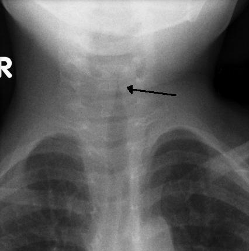

哮吼（急性喉氣管炎）
半夜突然出現像狗叫、海豹叫的咳嗽，吸氣時喉嚨還有「咻咻」聲——這通常是哮吼。它看起來很嚇人，但大多數孩子在家照顧、加上一劑藥物就會好轉。
1哪裡出了問題？
哮吼是病毒感染了喉嚨下段（喉部）和氣管上段。發炎腫脹最明顯的地方在聲帶正下方，叫做聲門下。這裡是孩子呼吸道最窄的地方，一腫起來空氣就不容易通過，於是出現沙啞、狗吠聲咳嗽和吸氣時的喘鳴聲。
從正面剖開來看更清楚：正常時，聲帶下方的通道會像漏斗一樣逐漸變寬；哮吼時，聲門下的黏膜整圈腫起來，把通道擠成細細一條。
2為什麼小孩特別容易得？
同樣腫 1 公釐，對大人只是喉嚨有點緊；對幼兒細細的氣管，卻會讓通道直徑少一半、呼吸阻力增加 16 倍。這就是為什麼哮吼幾乎只發生在小小孩，長大後同樣的病毒通常只會造成喉嚨痛或聲音沙啞。
3哮吼是怎麼發生的？
通常先有 1–2 天的流鼻水、輕微發燒，接著某天晚上突然出現狗吠聲咳嗽。
病毒感染
先有流鼻水、喉嚨不舒服，病毒往下感染到喉部。
聲門下腫脹
黏膜發炎腫起來，空氣通道變得很窄。
狗吠咳、喘鳴
氣流擠過窄處，發出像狗叫的咳嗽與吸氣時的喘鳴聲。
半夜最嚴重
常在半夜突然加重，前 1–2 晚最厲害，之後逐漸改善。
4聽聽看哮吼的聲音
這是一位 13 個月大、得到哮吼的孩子的呼吸聲。注意聽吸氣時那種高音、粗糙的「咻——」聲，這叫做喘鳴（stridor）。如果孩子安靜休息時也一直有這種聲音，代表呼吸道已經很窄，需要盡快就醫。
建議錄下孩子發作時的聲音或影片，回診時給醫師聽，對判斷很有幫助。
5常見症狀
通常是輕到中度
哮吼的孩子通常精神還不錯、可以喝水。如果孩子看起來病得很重、流口水、吞不下，可能是其他更危險的疾病，請立刻就醫。
6在家怎麼照顧？
- 保持冷靜、抱著安撫：孩子哭鬧時會更喘。讓他坐直或抱在胸前，用平靜的聲音說話、講故事、看喜歡的影片。
- 醫師開的類固醇通常只需要一劑：口服後 1–2 小時開始作用，效果可以維持 1–2 天。單次使用很安全。
- 冷空氣可能有幫助：天氣冷的晚上，把孩子穿暖後抱到戶外呼吸冷空氣約 30 分鐘，研究顯示可以減輕症狀。但如果孩子很喘，請直接就醫，不要只靠冷空氣。
- 不需要蒸氣、熱水澡或加濕器：研究證實對哮吼沒有幫助，熱水還可能造成燙傷。
- 發燒或喉嚨痛：可以使用醫師開立的退燒止痛藥，並少量多次補充水分。
- 不需要抗生素、止咳藥：哮吼是病毒感染，抗生素沒有用；止咳藥也不能讓喉嚨消腫。
- 晚上睡在孩子附近：前 1–2 個晚上症狀最明顯，睡在旁邊才能注意到呼吸變化。
7什麼時候要就醫？
出現以下情況，請立刻到急診（嚴重時打 119）
- 安靜休息時也一直有明顯的喘鳴聲
- 吸氣時胸口、肋骨之間或脖子下方明顯凹陷
- 嘴唇或臉色發紫、發白
- 流口水、吞不下、不肯躺下、一直坐著往前傾
- 非常躁動不安，或反過來變得很累、叫不太醒
- 呼吸很快很費力、說不出話、哭不出聲音
- 高燒而且看起來病得很重
- 喝不下、尿量明顯減少
這些情況請安排門診
- 小於 6 個月的寶寶出現哮吼症狀
- 症狀超過 7 天還沒好轉
- 一年內反覆發作好幾次，或兩次發作之間仍有喘鳴聲
8可以怎麼預防？
- 勤洗手：引起哮吼的病毒主要透過飛沫和接觸傳染。
- 接種流感與 COVID-19 疫苗：這兩種病毒引起的哮吼通常比較嚴重。最常見的副流感病毒目前沒有疫苗。
- 遠離菸害：二手菸會刺激呼吸道，讓症狀更嚴重。
- 生病時在家休息：減少傳染給其他小朋友。
近五年實證重點（2026/11 整理）
- 類固醇適用於所有嚴重度：2023 Cochrane（45 篇 RCT、5888 名兒童）確認類固醇能在 2 小時內改善症狀、縮短住院、減少回診 [2]；2026 AAFP 實證回顧列為 SORT A [1]。
- Dexamethasone 劑量：0.15 mg/kg 與 0.6 mg/kg 在 2 小時症狀分數、回診與住院率上沒有差異（高確定性），但 24 小時症狀分數可能以 0.6 mg/kg 較佳（單一小型 RCT）[2]。多數指引仍採 0.6 mg/kg [1,3,4]。
- Prednisolone 可替代：與 dexamethasone 在 2、6 小時效果相近，但回診或再入院可能較多 [2]。
- 冷空氣：2023 RCT 顯示，口服 dexamethasone 後在戶外（< 10°C）待 30 分鐘，Westley 分數下降 ≥ 2 分的比例 49% vs 24%，中度哮吼效果最明顯 [5]。
- SARS-CoV-2：Omicron 流行後成為哮吼的主要病原之一 [7]，且較常需要多次 epinephrine 與住院 [6]；但目前沒有高品質證據支持因此改變標準處置 [4]。
診斷與影像
哮吼為臨床診斷：病毒前驅症狀後出現犬吠樣咳嗽、聲音沙啞、吸氣性喘鳴 [1,3]。
- 不需常規做病毒檢測、血液檢查或頸部 X 光；只有在表現不典型、懷疑其他診斷時才考慮 [1,4]。
- 不需常規抽血氣；懷疑呼吸衰竭時可考慮動脈血氣 [3,4]。

嚴重度分級
| 分級 | 咳嗽 | 喘鳴 | 胸凹 | 其他 |
|---|---|---|---|---|
| 輕度 | 偶爾犬吠咳 | 安靜時無或極輕微 | 無或輕微 | 無痛苦、無發紺 |
| 中度 | 頻繁犬吠咳 | 安靜時明顯可聞 | 安靜時可見 | 無或輕度不適、無發紺 |
| 重度 | 頻繁犬吠咳 | 明顯吸氣喘鳴，偶有吐氣喘鳴 | 明顯、嚴重 | 可能明顯倦怠；無發紺 |
| 即將呼吸衰竭 | 可能因疲累而不明顯 | 可能變小聲、不易聽到 | 可能不明顯 | 嗜睡或意識下降；未給氧時發紺 |
依加拿大兒科醫學會分級 [3]。注意：喘鳴和胸凹「變輕微」可能是疲累、即將衰竭的徵兆，要搭配意識與膚色判斷。
Westley croup score
| 項目 | 0 分 | 1 分 | 2 分 | 3 分 | 4 分 | 5 分 |
|---|---|---|---|---|---|---|
| 意識 | 正常（含睡眠） | 定向感異常 | ||||
| 發紺 | 無 | 激動時 | 安靜時 | |||
| 喘鳴 | 無 | 激動時 | 安靜時 | |||
| 空氣進入 | 正常 | 減少 | 明顯減少 | |||
| 胸凹 | 無 | 輕度 | 中度 | 重度 |
總分 ≤ 2 輕度；3–5 中度；6–11 重度；≥ 12 即將呼吸衰竭 [8]。原本用於研究，臨床上可作為治療前後的比較。
常見致病原
| 病原 | 臨床重點 |
|---|---|
| Parainfluenza virus 1、3（2） | 傳統上最常見的病原 [1]。PIV1 好發於秋季；PIV3 多在春夏。韓國 2018–2020 年資料：PIV1 22.9%、PIV3 15.7% [7]。 |
| SARS-CoV-2 | Omicron 流行期（2022）韓國有找到病原的哮吼中 97.2% 為 SARS-CoV-2 [7]。症狀較重、較常需多次 epinephrine、住院與加護 [1,6]。 |
| Rhinovirus／enterovirus | 常見，韓國 COVID 前資料占 30.1% [7]。 |
| RSV、hMPV、adenovirus | 較少見；adenovirus 9.6%、RSV 約 10%、hMPV 3.6% [7]。 |
| Influenza A／B | 比例不高，但症狀通常較嚴重、病程較長。 |
| Mycoplasma pneumoniae | 偶見，多為較大兒童。 |
比例取自韓國單一醫院 879 例資料（各期間分母不同）[7]，台灣近年缺少同類的病原分布資料。病原結果通常不改變處置，不需常規檢驗 [1,4]。
依嚴重度處置
| 嚴重度 | 處置 | 去向 |
|---|---|---|
| 輕度 | Dexamethasone 單劑口服；衛教安撫與冷空氣 [1,3,5] | 可返家，衛教回診警訊 |
| 中度 | Dexamethasone 單劑口服＋霧化 epinephrine [1,3] | 觀察 2–4 小時；症狀未復發可返家 [1,3] |
| 重度 | 霧化 epinephrine（可每 15–20 分鐘重複）＋dexamethasone（口服困難時 IM/IV）；SpO₂ < 90% 給氧 [3,4] | 通常需住院；持續重度考慮加護 [4] |
| 即將呼吸衰竭 | 給氧、霧化 epinephrine、dexamethasone IV/IM；通知麻醉／耳鼻喉／加護團隊，準備插管（使用比預估小 0.5–1 號的氣管內管） | 加護病房 |
處置過程盡量讓孩子待在家長懷裡，避免不必要的刺激（如壓舌、抽血），以免哭鬧加重阻塞。
藥物與劑量
| 藥物 | 劑量 | 用法 | 備註 |
|---|---|---|---|
| 類固醇（所有嚴重度皆應給予） | |||
| Dexamethasone | 0.6 mg/kg | 單劑 PO（首選），或 IM／IV | 最多 12 mg [1]。0.15 mg/kg 在 2 小時與回診率上效果相近 [2]，可作為選項。持續嘔吐或呼吸窘迫明顯時改 IM [3]。作用 2–3 小時內開始，持續 24–48 小時 [3]。 |
| Prednisolone | 1 mg/kg | PO | 無 dexamethasone 時的替代 [1,2]；回診率可能稍高 [2]。部分指引不建議作為首選 [4]。 |
| Budesonide | 2 mg | 霧化，單劑 | 效果與 dexamethasone 相近但較貴；用於嘔吐、無法口服或家長拒絕全身性類固醇時 [4]。與口服 dexamethasone 併用無額外效益 [3]。 |
| 霧化 epinephrine（中度以上） | |||
| L-epinephrine 1:1000（1 mg/mL） | 0.5 mL/kg | 加生理食鹽水霧化 | 最多 5 mL。台灣常用劑型。10–30 分鐘內起效，約 2 小時後效果消失，給藥後至少觀察 2–4 小時 [1,3]。只可霧化，不可 IV／IM [1]。 |
| Racemic epinephrine 2.25% | 0.05 mL/kg | 加生理食鹽水霧化 | 最多 0.5 mL；0.5 mL 與 L-epinephrine 5 mL 等效 [3]。台灣較少見。 |
| 其他 | |||
| 氧氣 | — | — | SpO₂ < 90% 時給予 [4]。 |
| Heliox | — | — | 僅限重度個案在急診或加護病房短暫使用，等待其他治療起效 [4]。 |
不建議
- 加濕空氣／蒸氣：沒有療效 [1]。
- 抗生素：病毒感染；只有懷疑細菌性氣管炎等合併症時才使用。
- 止咳藥、去充血劑、支氣管擴張劑（β2-agonist）：沒有證據支持。
- 常規重複給予類固醇：不建議；SARS-CoV-2 或難治的重度個案可個別考慮 [4]。
留觀、出院與住院
可以出院（急診）
- 安靜時無或僅極輕微喘鳴、無明顯呼吸費力，能說話、進食 [4]
- 距上次 epinephrine 超過 2 小時且無復發 [3,4]，總共少於 3 次 epinephrine [4]
- 已給予類固醇 [4]
- 家長了解回診警訊，能在需要時迅速返院；建議 1–2 天內電話或門診追蹤 [4]
考慮住院
- 治療後仍持續中度以上症狀、安靜時喘鳴、明顯呼吸費力 [4]
- 24 小時內（含外院）已用 3 次以上 epinephrine [4]
- 需要氧氣、脫水或進食不佳、表現不典型 [4]
- 年紀很小（< 6 個月）、已知氣道異常、交通或照顧條件不佳
住院出院條件：症狀輕微或改善、水分足夠、距上次 epinephrine > 2 小時、停氧 > 12 小時；檢查未完全正常時可考慮多觀察一晚 [4]。
鑑別診斷
| 疾病 | 區分線索 |
|---|---|
| 會厭炎 | 急性高燒、病容、流口水、吞嚥困難、三腳架姿勢，通常沒有犬吠咳。Hib 疫苗普及後罕見。勿壓舌、勿讓孩子平躺，儘速安排呼吸道專家 [1,3]。 |
| 細菌性氣管炎 | 先像典型哮吼，之後高燒、病容惡化、對 epinephrine 反應差；最常見為 S. aureus。需抗生素，常需插管 [1]。 |
| 咽後／扁桃腺周圍膿瘍 | 發燒、頸部僵硬或活動受限、吞嚥痛、流口水 [1]。 |
| 呼吸道異物 | 突然嗆咳、無前驅感染或發燒 [1]。 |
| 過敏反應／血管性水腫 | 突然發生，合併蕁麻疹、臉部腫脹或過敏原接觸史。 |
| 痙攣性哮吼 | 夜間突發、無發燒或前驅症狀，常反覆，與過敏、胃食道逆流有關。 |
| 先天或後天氣道異常 | < 6 個月發病、反覆或持續喘鳴：聲門下狹窄（曾插管）、聲門下血管瘤、喉軟化症等。 |
反覆性哮吼
- 反覆發作、非典型年齡（< 6 個月或 > 6 歲）、發作之間仍有症狀，或病程拖延時，應評估解剖構造異常，以及胃食道逆流、過敏體質等相關因素 [1]。
- 可轉介耳鼻喉科評估是否需要喉氣管鏡檢查。
參考資料
- Cooke A, Conway S, Griffin L. Croup: rapid evidence review. Am Fam Physician. 2026;113(3):254–258. AAFP 實證回顧
- Aregbesola A, Tam CM, Kothari A, Le ML, Ragheb M, Klassen TP. Glucocorticoids for croup in children. Cochrane Database Syst Rev. 2023;1:CD001955. doi:10.1002/14651858.CD001955.pub5 Cochrane 回顧
- Ortiz-Alvarez O; Canadian Paediatric Society, Acute Care Committee. Acute management of croup in the emergency department. CPS practice point; 2017 (updated March 2026). CPS 指引
- Northern California Pediatric Hospital Medicine Consortium. Consensus guidelines for management of croup. UCSF Benioff Children's Hospitals; updated March 2026. 醫院聯盟共識
- Siebert JN, Salomon C, Taddeo I, Gervaix A, Combescure C, Lacroix L. Outdoor cold air versus room temperature exposure for croup symptoms: a randomized controlled trial. Pediatrics. 2023;152(3):e2023061365. doi:10.1542/peds.2023-061365 RCT
- Brewster RC, Parsons C, Laird-Gion J, et al. COVID-19-associated croup in children. Pediatrics. 2022;149(6):e2022056492. doi:10.1542/peds.2022-056492
- Lee JK, Song SH, Ahn B, Yun KW, Choi EH. Etiology and epidemiology of croup before and throughout the COVID-19 pandemic, 2018–2022, South Korea. Children (Basel). 2022;9(10):1542. doi:10.3390/children9101542
- Westley CR, Cotton EK, Brooks JG. Nebulized racemic epinephrine by IPPB for the treatment of croup: a double-blind study. Am J Dis Child. 1978;132(5):484–487. 評分來源
文獻搜尋截至 2026 年 11 月。AAP 沒有發布哮吼的臨床指引，因此以 AAFP 實證回顧、Cochrane 回顧與加拿大兒科醫學會指引為主要依據。
本頁內容整理於 2026 年 11 月，供門診衛教與醫療人員參考，不能取代個別的診察與判斷。藥物劑量請以藥品仿單及最新指引為準。